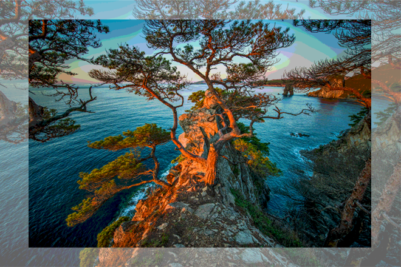

КЛИМАТ
В Приморском крае холодные и сухие зимы, продолжительная и прохладная весна с резкими перепадами температуры. Лето здесь тёплое и влажное, с обильными осадками и туманом. В июле и августе регион нередко попадает под удары тайфунов. Осенью в основном стоит ясная, сухая и тёплая погода.
Средние температуры воздуха на побережье в июле — от +17 до +26 °C, а в январе — от –8 до –14 °C. Но в горных районах зимой бывают заморозки до –50 °C, а летом — жара до +40 °C.
Вода летом прогревается до +20 … +25 °C. Купальный сезон продолжается с последних чисел июня до начала октября. Много солнечных дней в году, почти полное отсутствие изнуряющего летнего зноя, а также минеральные источники и целебные грязи благоприятно влияют на здоровье и создают в Приморье исключительные условия для туризма и лечения.
